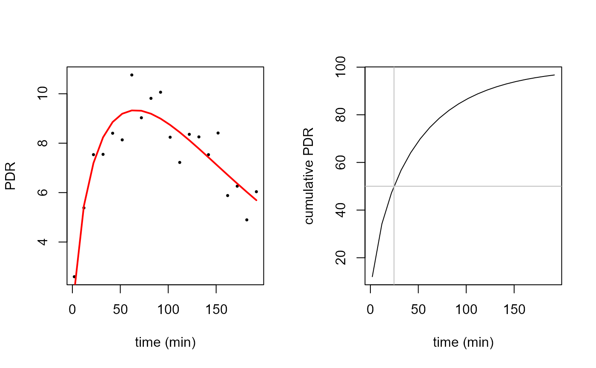
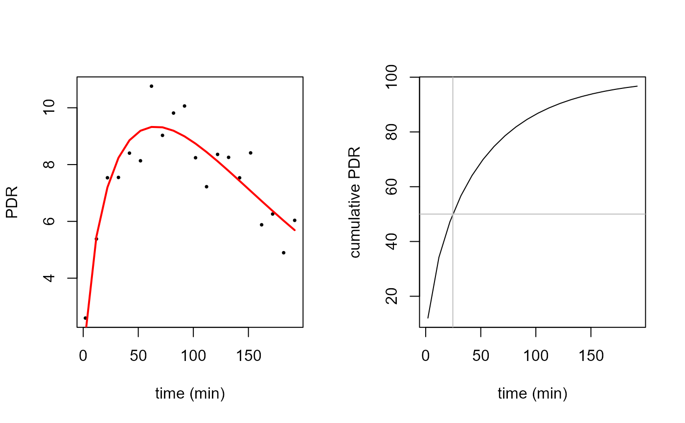

Function to fit PDR time series data to exponential-beta function as given in:
Maes, B. D., B. J. Geypens, Y. F. Ghoos, M. I. Hiele, and P. J. Rutgeerts. 1998. 13C-Octanoic Acid Breath Test for Gastric Emptying Rate of Solids. Gastroenterology 114(4): 856-50
Sanaka M, Nakada K (2010) Stable isotope breath test for assessing gastric emptying: A comprehensive review. J. Smooth Muscle Research 46(6): 267-280
Bluck L J C and Coward W A 2006 Measurement of gastric emptying by the C-13-octanoate breath test --- rationalization with scintigraphy Physiol. Meas. 27 279?89
For a review, see
Bluck LJC (2009) Recent advances in the interpretation of the 13C octanoate breath test for gastric emptying. Journal of Breath Research, 3 1-8
Arguments
- minute
vector of time values in minutes
- dose
in mg
- m
efficiency
- k
time constant
- beta
form factor
Details
The function is defined as
exp_beta = function(minute,dose,m,k,beta) {
m*dose*k*beta*(1-exp(-k*minute))^(beta-1)*exp(-k*minute)
}At minute == 0, the function behaves like a polynomial with degree (beta-1).
See also
In the example below, data and fit are plotted with standard R graphics.
The S3 method plot.breathtestfit provides ggplot2 graphics.
Examples
start = list(m=20,k=1/100,beta=2)
# fit to real data set and show different t50 results
sample_file = btcore_file("350_20043_0_GER.txt")
# minute 0 must be removed to avoid singularity
breath_id = read_breathid(sample_file)
data = subset(breath_id$data, minute >0)
sample_nls = nls(pdr~exp_beta(minute, 100, m, k, beta), data = data, start = start)
data$pdr_fit_bluck=predict(sample_nls)
plot(data$minute, data$pdr, pch=16, cex=0.7, xlab="time (min)", ylab="PDR",
main="t50 with different methods")
lines(data$minute,data$pdr_fit_bluck, col="blue")
t50 = t50_bluck_coward(coef(sample_nls))
t50_maes_ghoos = t50_maes_ghoos(coef(sample_nls))
t50scint = t50_maes_ghoos_scintigraphy(coef(sample_nls))
abline(v = t50, col = "red")
abline(v = t50_maes_ghoos, col = "darkgreen", lty = 2)
abline(v = breath_id$t50, col = "black", lty = 4)
abline(v = t50scint, col = "gray", lty = 3)
text(t50, 0, "Self-corrected Bluck/Coward", col = "red", adj = -0.01)
text(breath_id$t50, 0.5,"From BreathID device",col = "black", adj=-0.01)
text(t50scint, 1," Maes/Ghoos scintigraphic", col = "gray", adj = -0.01)
text(t50_maes_ghoos,1.5, "Classic Maes/Ghoos", col = "darkgreen", adj = -0.01)
 # simulated data set
dose = 100
set.seed(4711)
# do not use minute 0, this gives singular gradients
# if required, shift minute = 0 by a small positive amount, e.g. 0.1
# create simulated data
pdr = data.frame(minute=seq(2, 200, by = 10))
pdr$pdr =
exp_beta(pdr$minute, 100, start$m, start$k, start$beta) + rnorm(nrow(pdr), 0, 1)
par(mfrow = c(1, 2))
# plot raw data
plot(pdr$minute, pdr$pdr, pch=16, cex=0.5, xlab = "time (min)",ylab = "PDR")
# compute fit
pdr_nls = nls(pdr~exp_beta(minute, 100, m, k, beta), data = pdr, start = start)
# compute prediction
pdr$pd_rfit = predict(pdr_nls)
lines(pdr$minute, pdr$pd_rfit, col="red", lwd=2)
# plot cumulative
plot(pdr$minute, cum_exp_beta(pdr$minute,100,coef(pdr_nls)), type="l",
xlab = "time (min)", ylab = "cumulative PDR")
# show t50
t50 = t50_bluck_coward(coef(pdr_nls))
tlag = tlag_bluck_coward(coef(pdr_nls))
abline(v = t50, col = "gray")
abline(v = tlag,col = "green")
abline(h = 50, col = "gray")

# create simulated data from several patients
pdr1 = data.frame(patient = as.factor(letters[1:10]))
pdr1$m = start$m*(1 + rnorm(nrow(pdr1), 0, 0.1))
pdr1$k = start$k*(1 + rnorm(nrow(pdr1), 0, 0.3))
pdr1$beta = start$beta*(1 + rnorm(nrow(pdr1), 0, 0.1))
pdr1 = merge(pdr1, expand.grid(minute = seq(2, 200, by = 10),
patient = letters[1:10]))
pdr1 = pdr1[order(pdr1$patient, pdr1$minute), ]
# simulated case: for patient a, only data up to 50 minutes are available
pdr1 = pdr1[!(pdr1$patient == "a" & pdr1$minute > 50),]
set.seed(4711)
pdr1$pdr =
with(pdr1, exp_beta(minute, 100, m, k, beta) + rnorm(nrow(pdr1), 0, 1))
# compute nls fit for patient a only: fails
# the following line will produce an error message
# \donttest{
pdr_nls = try(nls(pdr~exp_beta(minute, 100, m, k, beta), data=pdr1, start=start,
subset = patient=="a"))
#> Warning: NaNs produced
#> Error in qr.default(.swts * gr) :
#> NA/NaN/Inf in foreign function call (arg 1)
stopifnot(class(pdr_nls) == "try-error")
# }
# use nlme to fit the whole set with one truncated record
suppressPackageStartupMessages(library(nlme))
pdr_nlme = nlme(pdr~exp_beta(minute,100,m,k,beta), data = pdr1,
fixed = m+k+beta~1,
random = m+k+beta~1,
groups = ~patient,
start = c(m = 20, k = 1/100, beta = 2))
coef(pdr_nlme)
#> m k beta
#> a 21.999 0.008962 1.486
#> b 20.389 0.014743 1.983
#> c 20.003 0.015422 2.123
#> d 22.037 0.006304 1.398
#> e 17.453 0.009322 2.432
#> f 17.852 0.009003 2.351
#> g 20.306 0.007039 1.769
#> h 1.965 0.013929 5.710
#> i 16.587 0.005433 2.496
#> j 22.178 0.014617 1.564
pred_data = expand.grid(minute = seq(0, 400, 10), patient = letters[1:10])
pred_data$pdr = predict(pdr_nlme, newdata = pred_data)
suppressPackageStartupMessages(library(ggplot2))
ggplot() +
geom_point(data = pdr1, aes(x = minute, y = pdr, color = "red")) +
geom_line(data = pred_data, aes(x = minute, y = pdr), color = "black", size=1) +
ggtitle("Short patient record 'a' gives a good fit with many missing data using nlme.\n
Borrowing strength from nlme in action!")+
facet_wrap(~patient) +
theme(legend.position="none")
# simulated data set
dose = 100
set.seed(4711)
# do not use minute 0, this gives singular gradients
# if required, shift minute = 0 by a small positive amount, e.g. 0.1
# create simulated data
pdr = data.frame(minute=seq(2, 200, by = 10))
pdr$pdr =
exp_beta(pdr$minute, 100, start$m, start$k, start$beta) + rnorm(nrow(pdr), 0, 1)
par(mfrow = c(1, 2))
# plot raw data
plot(pdr$minute, pdr$pdr, pch=16, cex=0.5, xlab = "time (min)",ylab = "PDR")
# compute fit
pdr_nls = nls(pdr~exp_beta(minute, 100, m, k, beta), data = pdr, start = start)
# compute prediction
pdr$pd_rfit = predict(pdr_nls)
lines(pdr$minute, pdr$pd_rfit, col="red", lwd=2)
# plot cumulative
plot(pdr$minute, cum_exp_beta(pdr$minute,100,coef(pdr_nls)), type="l",
xlab = "time (min)", ylab = "cumulative PDR")
# show t50
t50 = t50_bluck_coward(coef(pdr_nls))
tlag = tlag_bluck_coward(coef(pdr_nls))
abline(v = t50, col = "gray")
abline(v = tlag,col = "green")
abline(h = 50, col = "gray")

# create simulated data from several patients
pdr1 = data.frame(patient = as.factor(letters[1:10]))
pdr1$m = start$m*(1 + rnorm(nrow(pdr1), 0, 0.1))
pdr1$k = start$k*(1 + rnorm(nrow(pdr1), 0, 0.3))
pdr1$beta = start$beta*(1 + rnorm(nrow(pdr1), 0, 0.1))
pdr1 = merge(pdr1, expand.grid(minute = seq(2, 200, by = 10),
patient = letters[1:10]))
pdr1 = pdr1[order(pdr1$patient, pdr1$minute), ]
# simulated case: for patient a, only data up to 50 minutes are available
pdr1 = pdr1[!(pdr1$patient == "a" & pdr1$minute > 50),]
set.seed(4711)
pdr1$pdr =
with(pdr1, exp_beta(minute, 100, m, k, beta) + rnorm(nrow(pdr1), 0, 1))
# compute nls fit for patient a only: fails
# the following line will produce an error message
# \donttest{
pdr_nls = try(nls(pdr~exp_beta(minute, 100, m, k, beta), data=pdr1, start=start,
subset = patient=="a"))
#> Warning: NaNs produced
#> Error in qr.default(.swts * gr) :
#> NA/NaN/Inf in foreign function call (arg 1)
stopifnot(class(pdr_nls) == "try-error")
# }
# use nlme to fit the whole set with one truncated record
suppressPackageStartupMessages(library(nlme))
pdr_nlme = nlme(pdr~exp_beta(minute,100,m,k,beta), data = pdr1,
fixed = m+k+beta~1,
random = m+k+beta~1,
groups = ~patient,
start = c(m = 20, k = 1/100, beta = 2))
coef(pdr_nlme)
#> m k beta
#> a 21.999 0.008962 1.486
#> b 20.389 0.014743 1.983
#> c 20.003 0.015422 2.123
#> d 22.037 0.006304 1.398
#> e 17.453 0.009322 2.432
#> f 17.852 0.009003 2.351
#> g 20.306 0.007039 1.769
#> h 1.965 0.013929 5.710
#> i 16.587 0.005433 2.496
#> j 22.178 0.014617 1.564
pred_data = expand.grid(minute = seq(0, 400, 10), patient = letters[1:10])
pred_data$pdr = predict(pdr_nlme, newdata = pred_data)
suppressPackageStartupMessages(library(ggplot2))
ggplot() +
geom_point(data = pdr1, aes(x = minute, y = pdr, color = "red")) +
geom_line(data = pred_data, aes(x = minute, y = pdr), color = "black", size=1) +
ggtitle("Short patient record 'a' gives a good fit with many missing data using nlme.\n
Borrowing strength from nlme in action!")+
facet_wrap(~patient) +
theme(legend.position="none")